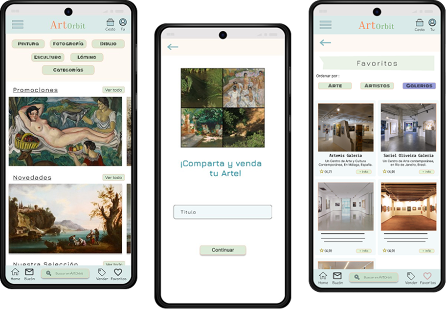
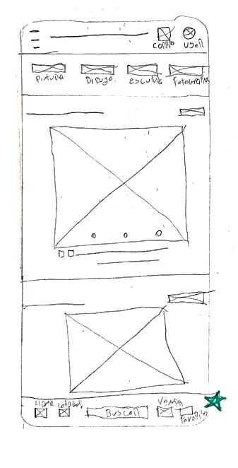
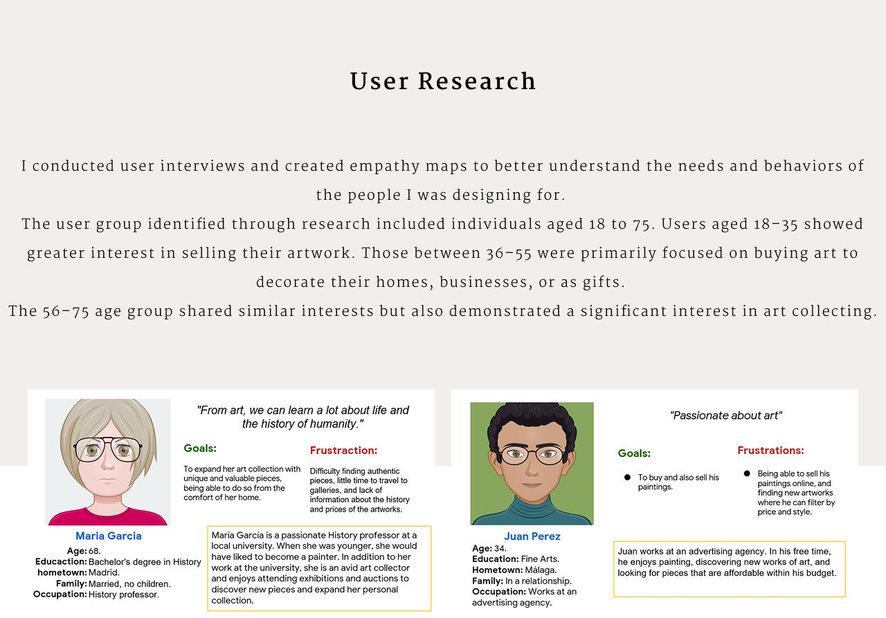
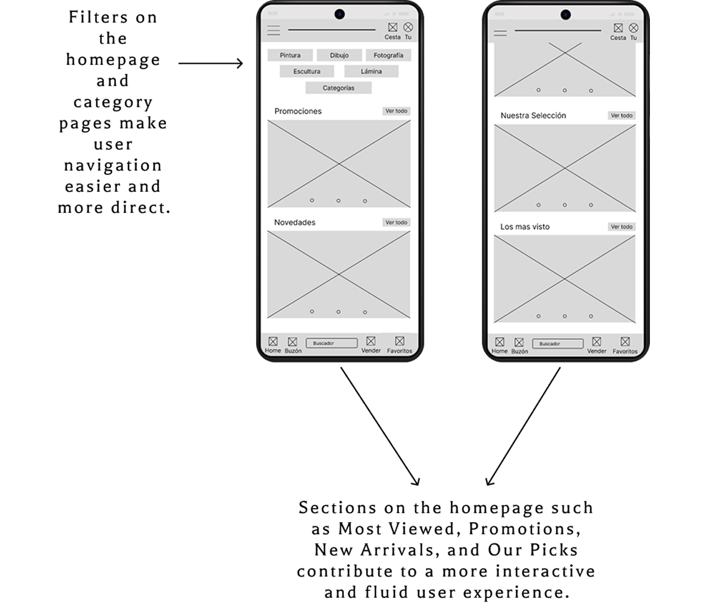
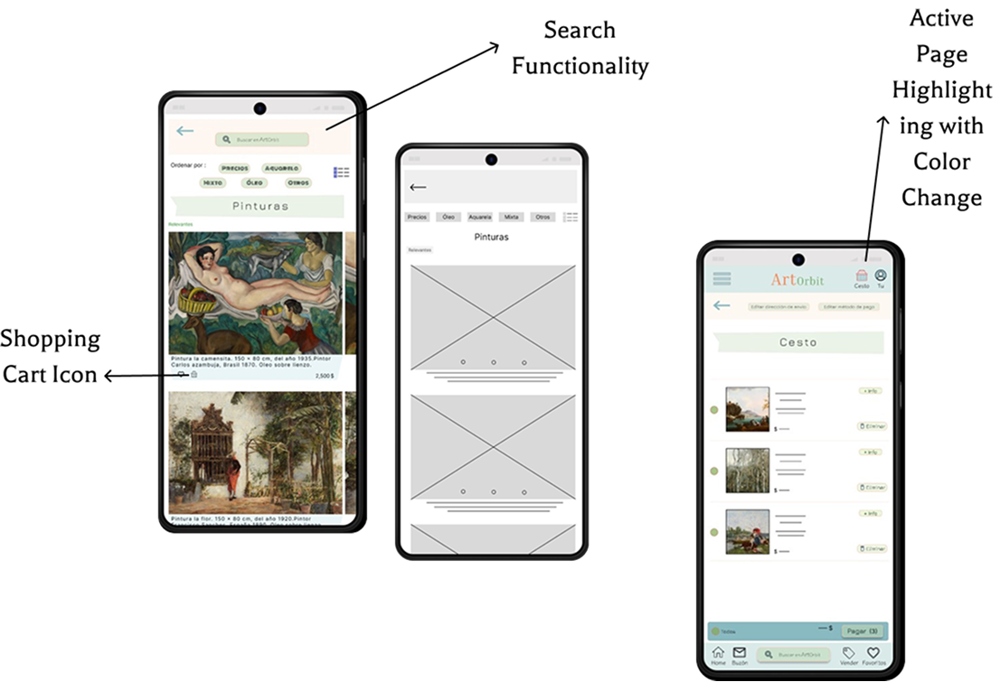
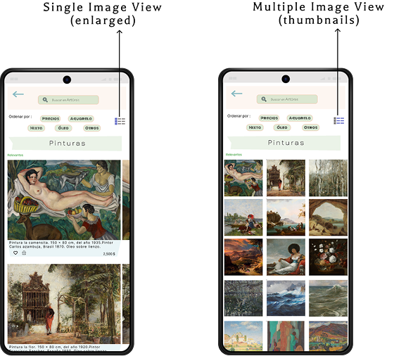
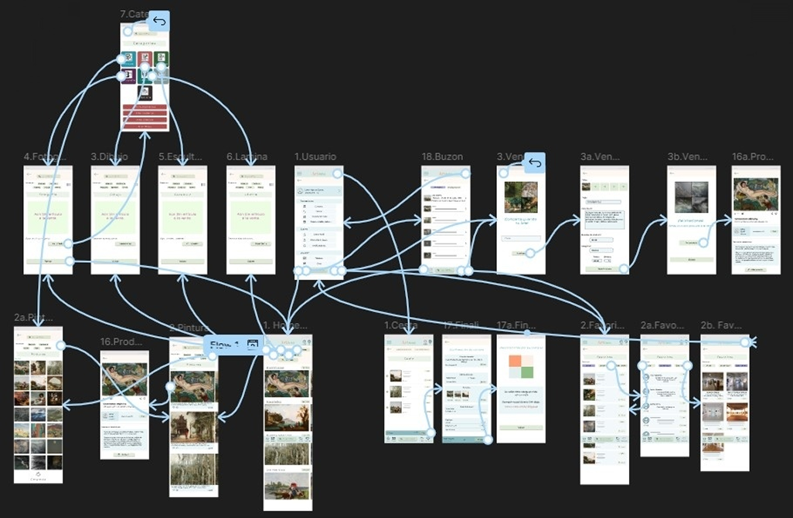

ArtOrbit is a global online art marketplace designed for users who want to buy and sell art from the comfort of their homes. It connects diverse social profiles with a shared interest in art, making it accessible to everyone.
August 2024 to October 2024
UI/UX Designer, from ideation to final delivery.
I created six iterations of the homepage design, with the final version serving as a preliminary definition of the intended main page.
For the homepage, I prioritized core functionalities, focusing on search and filters to streamline navigation and guide users efficiently toward their goals.
 Clear and visually guided navigation is key to an optimal user experience. I aimed to equip the homepage with all the essential features to ensure smooth and intuitive interaction for users.
Complete a purchase from the shopping cart and through the 'Painting' filter.
Publish a product directly from the homepage.
Based on the usability study findings, I implemented several design improvements:
Added the search bar to multiple pages to improve accessibility and consistency.
Included a shopping cart icon below each product, enabling users to add items directly to their cart without navigating into the product page.
Changed the icon's color to indicate when the user is on the corresponding page, enhancing visual feedback and orientation.
Following the low-fidelity usability study, the high-fidelity prototype was updated based on key findings, as well as improved for aesthetic and organizational value.
 Users can finalize their purchase either from the shopping cart or by applying the 'Painting' filter, streamlining the checkout experience from different touchpoints.
Additionally, the option to publish a product directly from the homepage encourages content creation and enhances accessibility for sellers.
Users can filter their favorite content by art, specific artists, or galleries, tailoring their experience to their interests.
Category filters allow browsing by art forms such as paintings, drawings, or sculptures, helping users quickly find what they're looking for.
On the 'Painting' section, users can choose between a compact thumbnail view or an enlarged detailed view, depending on their browsing preference.
ArtOrbit democratizes access to art by encouraging both buying and selling in an inclusive, user-friendly environment. The platform empowers artists while lowering the barriers for potential buyers.
A quote from peer feedback beautifully captures this spirit:
"I loved the idea! I often admire artworks in galleries, but I always feel too shy to ask about the price."
Designing ArtOrbit taught me that great ideas evolve through iteration. Early concepts are important, but it's the insights from usability testing and collaborative feedback that truly refine the product.
Above all, I learned the value of keeping design simple, intuitive, and accessible—putting users at the center every step of the way.